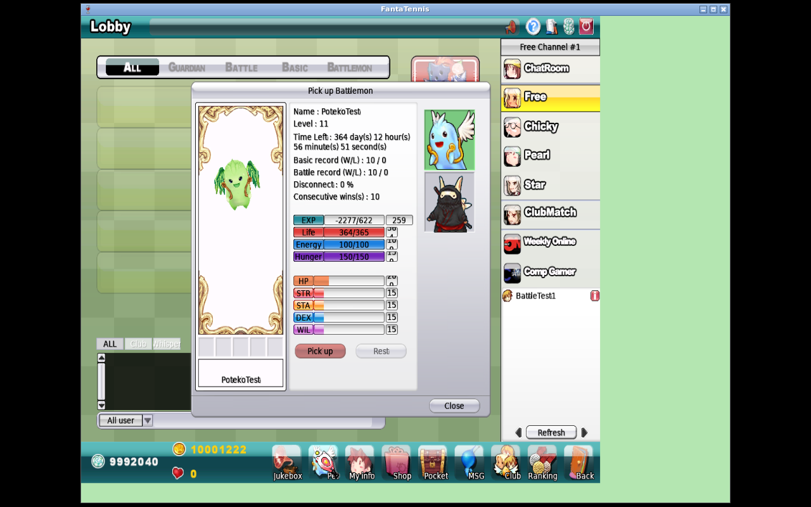

Branch: feature/battlemon-complete
Base: 3a0163aa (level persistence/serialization)
Validated HEAD: c3befbae
FantaTennis.exe SHA-256: 5477f0827acae66976403aecd2e9ebffeb4fa28da1fedae5f9541ec25e336c31
Validation date: 2026-08-13 UTC
The validated native client, not JFTSE Java code, owns Battlemon tennis AI.
JFTSE persisted level 11 for PotekoTest, serialized 0B in the native
0x151B pet-data response, and the unmodified client displayed Level : 11.
Static disassembly then establishes the remainder of the deterministic path:
the native pet-AI initializer forwards its level argument unchanged to
TennisAIMgr; TennisAIMgr walks the selected species vector in 88-byte
steps and accepts only a record whose first integer exactly equals that level.
Proven scope: a native pet initialized with level 11 requests and copies
the exact level-11 record loaded from the selected AI_PetA…AI_PetK
resource. No level clamp exists in this path.
Not claimed: Java TennisAI, stat growth from level, visual evolution, or any owned-pet mapping/fallback for levels 14–250.
| Class | Finding |
|---|---|
| Observed native runtime | JFTSE emitted 0x151B with PotekoTest level 0B; the unmodified client displayed level 11. |
| Static client reverse engineering | Exact-level lookup, model vector selection, 88-byte profile copy, Basic and Double call sites, and missing-level failure path. |
| JFTSE source baseline | Pet.level is an independent unsigned byte and is serialized separately from type and STR/STA/DEX/WIL. |
| Compatibility interpretation | None added. Native behavior remains authoritative. |
| Implementation in this work | Reproducible binary/wire verifier, conditioned GDB capture script, curated evidence, and this report. No Java AI. |
Pet.level = 11
→ JFTSE S2C 0x151B contains 0B after PotekoTest\0
→ native client displays Level : 11
→ TennisAIPetBasic/Double forwards initializer level
→ TennisAIMgr(model, level) compares exact integer level
→ matching 88-byte [Level11] record is copied into the native AI object
The controlled fixture kept pet type and STR/STA/DEX/WIL unchanged. This separates level-driven profile selection from item-grown statistics.
At VA 0x004F9BD0, the validated executable receives requested level at
[ebp+0x08], destination AI object at [ebp+0x0c], and nPetModel at
[ebp+0x10]. It computes the model vector, copies each candidate record to a
temporary 88-byte buffer, and compares its first dword with the requested
level. On equality it copies the record's behavior flags, probabilities,
timings, and movement values into the destination and returns true.
The Basic caller at 0x004F4289 and Double caller at 0x004F4CDC both pass
the initializer level directly to this lookup. The missing-record branch logs:
AI Level(%d) requested not found for nPetModel(%d)
There is no instruction clamping level to 13. Runtime memory extraction found
13 records for every owned-pet model 0–10, keyed 1–13; their hashes differ at
the discriminating levels. The separate model -1 default table is not an
owned-pet fallback.
The database changed only pet ID 2's level from 3 to 11. JFTSE emitted:
... 50 00 6F 00 74 00 65 00 6B 00 6F 00 54 00 65 00 73 00 74 00 00 00
0B 03 01 00 00 C8 00 00 00 0F 0F 0F 0F ...
^^ requested level 11; next bytes retain EXP/type/alive/HP/stats

Run the verifier against the immutable executable and captured packet log:
python3 scripts/verify_native_pet_ai_level.py /path/to/FantaTennis.exe \
--packet-log /path/to/game-server.log \
--pet-name PotekoTest --expected-level 11
For an additional in-match debugger capture, attach
trace-owned-pet-ai-level.gdb
before match start. Its breakpoint is conditioned to ignore model -1; a hit
prints requested level, matched level, owned-pet model, record address, and all
22 dwords of the selected profile before detaching.
| Artifact | Claim supported |
|---|---|
| Client hash | Exact executable provenance |
| DB before | Controlled baseline |
| DB after | Only level changed to 11 |
| Decoded packet | JFTSE sent level byte 0B |
| Native screenshot | Client accepted/rendered level 11 |
| Native profile table | Owned models contain distinct level 1–13 records |
| Verifier output | Binary and wire checks pass |
| Checksums | Curated evidence integrity |
The executable's owned-pet resources contain records 1–13, while JFTSE's displayed progression supports 1–250. This report does not bridge that gap by invention. A level above 13 reaches the native exact lookup but has no proven owned record; therefore the server must preserve the real level and must not silently clamp it. A future claim about native behavior above 13 requires a separate runtime experiment.
No Java decision tree is warranted. The smallest correct server contract is
already the implemented one: persist and serialize the independent pet
type, level, and stats. The validated client selects the exact native
[LevelN] record and executes TennisAIMgr behavior itself.
{kind=link}